Chapter II:
Can the process be used to demystify the artist?
On the Industrial revolution, the studio and the creative process
Hoffmann, Jens, 2012, The Studio (Documents of Contemporary Art) , Whitechapel Art Gallery, London. MIT Press
. Even if this or any other clichés behind the idea of the studio are likely to represent reality, they are based on concepts endured not only in art history, but also in popular culture, and usually rely on the idea of the artist perpetuated at the time.Fig 3 - Gustave Courbet, L`atelier du peintre, allégorie réelle déterminant une phase de sept années de ma vie artistique, 1854-1855, Musée d’Orsay, Paris.
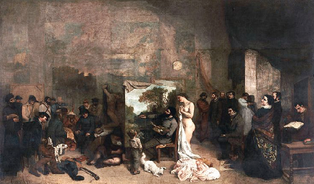
Fig 4 - Gerard Dou, De schilder in zijn atelier, 1647, Gemaelde Galerie Alte Meister, Dresden.
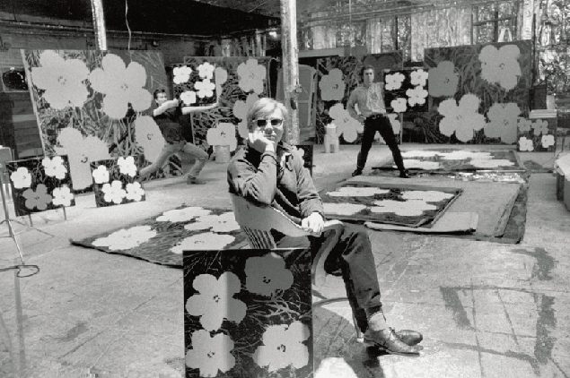
Fig 5 - Andy Warhol with ‘Flowers’ at The Factory. Actor Philip Fagan and artst Gerard Malanga are in the background. (1964)
Honour, Hugh; Fleming, John; 2009, A World History of Art , Laurence King
. Before the Renaissance the concept of a studio was not as prevailing one due to the centralised infrastructure of the Church that dominated artistic production: artists worked within the spaces they were commissioned to work for, like monasteries and other religious establishments. As artists started to develop more meaningful and long-lasting relationship with their commissioners – or patrons – they started to become dependant on this relationship rather than on specific locations. There was, however, a variety of contexts for the idea of the studio. The artist’s work was carried out in the bottega – the workshop or workroom – while the studiolo was a room for study and contemplation and would be in a separate space, although usually in the same building. This division already indicates a split in the perception of art production: the physical, practical work and the analysis and reflection – they were seen as different processes. This changed in the Romantic period, when the studio became both a space for practical work and introspection, a combination inherent to the model of the artist at the time and his perceived genius.Fig 6 - Wood engraving by Flemish artist Johannes Stradanus (1523-1605), depicting the “Rennaisance workshop” or studio, with the master (middle) and his apprentices.
Hunt, Perry, Revolution in Paint, 2006, North Carolina Museum of Art
. Along with paint, lightweight portable easels and brushes could be produced in large quantities and easily purchased at a store, making art an accessible commodity. This enabled an entire new way of painting known as en plain air – in open air – and artists across Europe could pack their materials and paint nature. Painting became an activity of leisure, an autonomous pursuit, without necessarily having to depend on the artist’s relationship with a patron: l’art pour l’art, literally “art for art”.Fig 8 - Edouard Manet , Monet in his Studio Boat, 1874, Neue Pinakothek, Munich, Germany.
The growing impact of industrial technology would mean more dramatic changes to the role of art in society and consequently, the role and practice of those producing it. In “The Work of Art in the Age of Mechanical Reproduction”, Walter Benjamin addresses how the reproduction possibilities enabled by the Industrial Revolution “brush aside a number of outmoded concepts, such as creativity and genius, eternal value and mystery” by destroying the uniqueness and authenticity – “the aura” – of the work of art. The value of the work no longer stems from its ritualistic value and tradition.
Davidts, Wouter, and Kimberly Paice. The Fall of the Studio: Artists at Work. Valiz, Amsterdam: Antennae, 2009.
. The elements, nature and adequacy of the artistic practice started therefore to be acknowledged not only by art historians, critics and the public, but by artists themselves.“Throughout the modern era, the idea that artists can do things that ordinary people cannot has been systematically refuted by artists themselves. Artists have not been knocked off their pedestals, they have stepped down voluntarily. […] the classic reaction to contemporary art is “Anyone could do that…” This process of deskilling in visual art must be regarded as irreversible, since it is a consequence of the social disconnection of artisthood from mainstream forms of production and productivity”
Winkel, Camiel Van. The Myth of Artisthood. Amsterdam: Mondriaan Fund, 2013.
Modern artists defied the standards of technique and craftsmanship that consisted the criteria for their own profession which at large challenged the genres, traditions and its archetypes of art. The model of the artist as a divine and solitary being that started in the Renaissance and thrived in the Romantic period was rejected by the modern artist, who preferred to be identified with the worker rather than the aristocrat (17).
Winkel, Camiel Van. 2013, The Myth of Artisthood. Amsterdam: Mondriaan Fund.
Another element of the artistic practice that was a target for critique was the designated site of its production: the studio. By the last stages of the modernist period, in 1960’s, it had lost its conventional prominence and mythical stature as the “imaginations chamber”. This model of the studio, reinforced during the Romantic period was now one that represented a type of artistic practice, material production and creative identity that was outdated and that artists wished to overcome or even avoid altogether (18)
Hoffmann, Jens, 2012, The Studio (Documents of Contemporary Art), Whitechapel Art Gallery, MIT Press, London.
.Davidts, Wouter, and Kimberly Paice. The Fall of the Studio: Artists at Work. Valiz, Amsterdam: Antennae, 2009.
In his essay “The Function of the Studio”, published in 1971, French artist Daniel Buren claims that “[…] the main point of the work is lost somewhere between its place of production and place of consumption and forced me to consider the problem and the significance of the work’s place. What I later came to realise was that it was the reality of the work, its “truth,” its relationship to its creator and place of creation, that was irretrievably lost in this transfer.”. The preoccupation with “truthfulness” in the context of the art apparatus implies a concern with the reception of the work. He addresses the studio as a place where “[…]we generally find finished work, work in progress, abandoned work, sketches – a collection of visible evidence viewed simultaneously that allows an understanding of process; it is this aspect of the work that is extinguished by the museum’s desire to “install.”.Whether Buren’s concern with displaying the work in its original site of production is related to a responsibility of increasing the public awareness of art or to his desire to safeguard his position at the moment of creation , it poses an important question: Could the studio be used as a framework for uncovering the creative process and the mechanisms of the art practice and system?
Fig 9 - Raoul Dufy in his studio, 1945, photograp by Cecil Beaton.
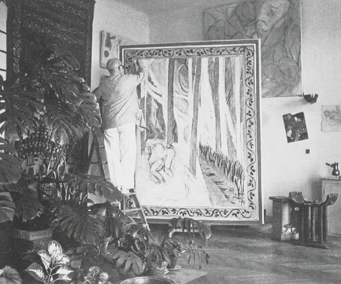
Fig 10 -Henri Matisse painting in his studio, 1941
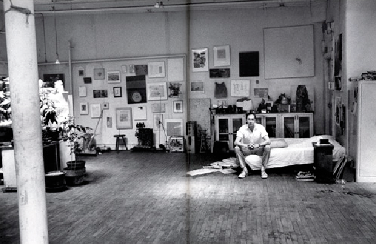
Fig 11 -Robert Rauschenberg in his studio, 1965, photograph by Alexander Liberman
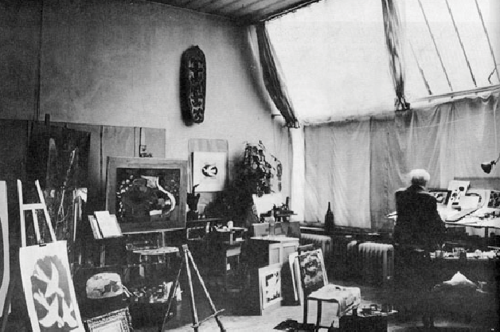
Fig 12 - Braque in his studio, 1966.
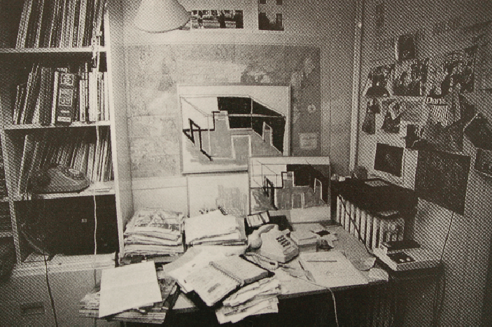
Fig 13 - Daniel Buren, Photo-Souvenir: Le Bureau de Daniel Buren, Paris. 1987.
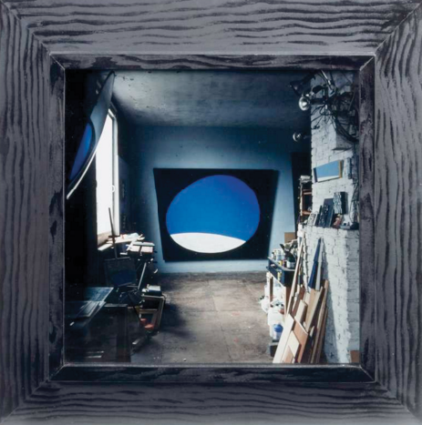
Fig 14 - J.C.J. van der Heyden, Atelier met gebogen horizon, 1992, Centraal Museum, Amsterdam.
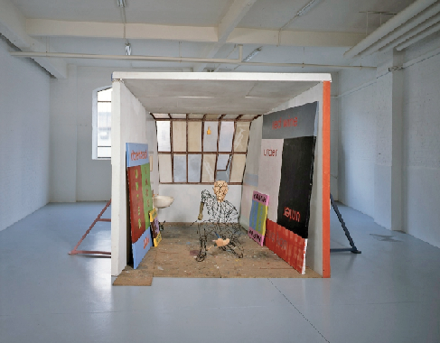
Fig 15 - Martin Kippenberger, Spiderman Atelier, 1996, Galerie Gisela Capitain, Keulen, The Herbert Foundation.
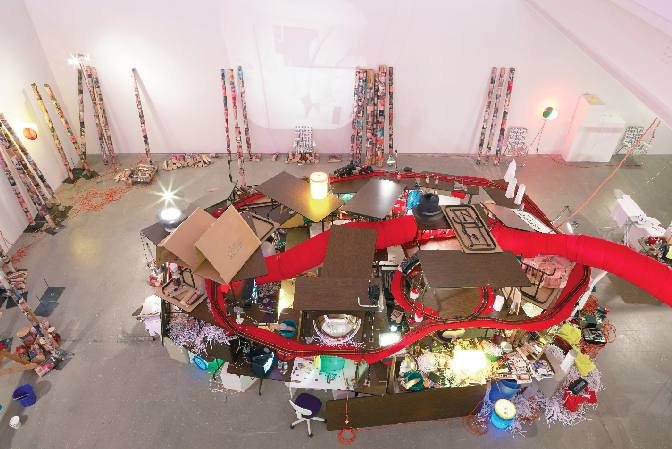
Fig 16 - Jason Rhoades, The Creation Myth, 1998.
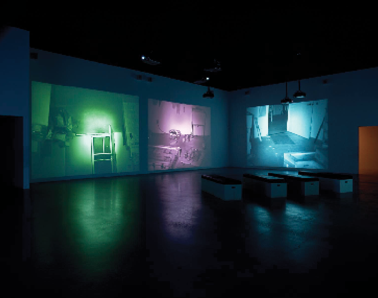
Fig 17 - Bruce Nauman, Mapping the Studio (video still), 2001, part of the collection of Tate Modern, London, The Pompidou Centre, Paris and Kunstmuseum, Basel.
Munsterberg, Marjorie, 2009, Writing about Art - The Biography, Writing About Art
.“[The focus on] The Studio, in some ways, replaces what was considered “artistic genius” between the 16th and 19th centuries, or what in late modernism was called a “star”. It stands for the legitimising authenticity and the guarantee that the works of art made by an artist, or is assistants, will maintain their symbolic and economic value because they emerge from an inexhaustible source of creativity.”
Philip Unsprung, Narcissistic Studio: Olafur Eliasson in Davidts, Wouter, and Kimberly Paice, The Fall of the Studio: Artists at Work . Valiz, Amsterdam: Antennae, 2009.
Fig 18 - Olafur Eliasson’s studio, 2015, found on the artist’s website.
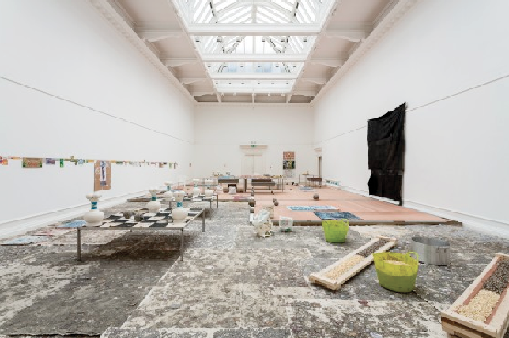
Fig 19 - Oscar Murrilo, 2013, if I was to draw a line, this journey started approximately 400km north of the equator, South London Gallery.
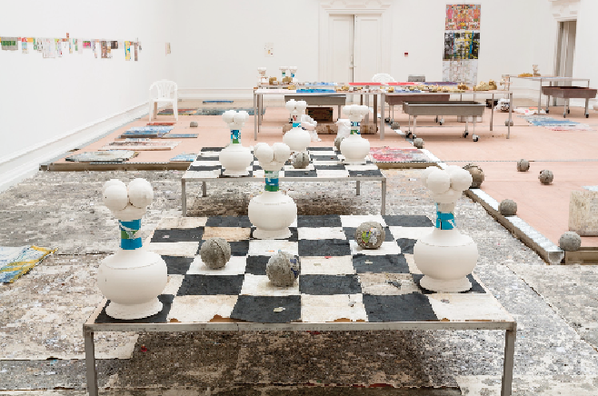
Fig 20 - Oscar Murrilo, 2013, if I was to draw a line, this journey started approximately 400km north of the equator, South London Gallery.
Winkel, Camiel Van. 2013, The Myth of Artisthood . Amsterdam: Mondriaan Fund.
. A counter-myth can become a myth in itself. Just like the aforementioned attempt of modern artists to “jump off the pedestal” have not entirely fulfilled its promise (didn’t the lack of conventions in modern art gain its own “revolutionary” value, that overcame the ritualistic and traditional value it had before?), the process of art and “the studio” has become an artistic product, cancelling out its value as the framework of the work by becoming the work in itself, and by doing that, mystifying the creative process.